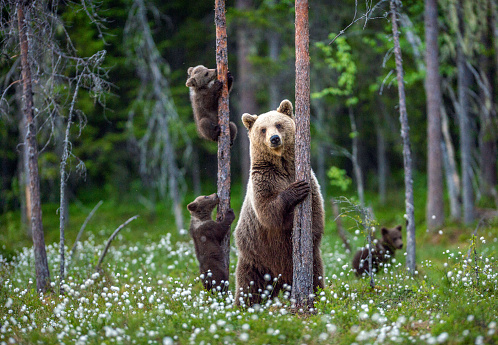
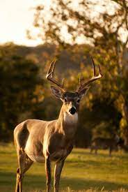

Hello! My name is Nirosh Perera, the hand behind the paintings! Born and raised in Sri Lanka, I had the opportunity to venture into the tropical jungles to observe wildlife at close quarters. My interest in wildlife and specifically birds, started at a very young age, where my first endeavour was a series of Sri Lankan birds, drawn with felt pens for a school project. I was 12.

Although I didn't pursue art as a subject after the age of 16, I continued to paint animals and human portraits. It was not until 21, that I joined the Vibhavi Academy of Fine Arts, to gain the grounding I needed. Although I was very comfortable with pen and ink, I had not worked with pastels until I met Royden Gibbs in 2011, a renowned water colour artist. Under his tutelage, I started using soft pastels. Since then, I have honed my pastel rendering skills to produce realist-style paintings of animals.
I am also a wildlife photographer, as you will no doubt notice (hint: that's a Canon lens, not a cannon!). All the reference material for my wildlife paintings are from various excursions around Sri Lanka and England, with a handful of shot in other countries. I'm Committee Member of the London Bird Club (part of the LNHS), and I regularly travel with the LBC and RSPB member groups all around the UK to do my part in the conservation of fauna and flora. I'm proud to say that a photograph I took of a Stonechat in New Forest adorns the back cover of the London Bird Atlas, which was recently published. I currently reside in Balham, London. My home is also my studio, which I have set up in a way to get the most natural light.
